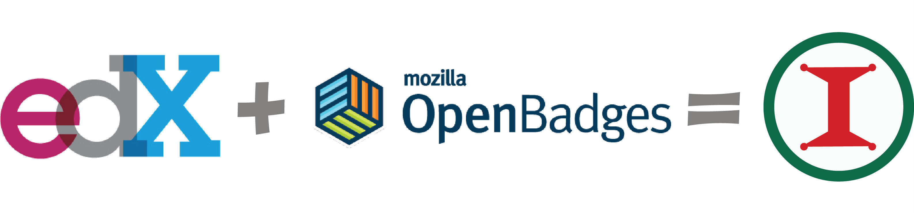

Insignias
Insignias es nuestra propuesta de solución para el reto ExperTIC. El cual nos invita a crear un portal de capacitación en Tecnologías de la Información para los Servidores Públicos del Gobierno Federal de México.
¿Cómo resuelve el reto?
Insignias es una plataforma libre basada en el LMS Open Edx(AGPL) creada por el MIT y Harvard para el hospedaje de cursos masivos y abiertos, y el proyecto Open Badges(CC), que ayuda a visualizar logros.

Insignias otorga premios digitales al completar un curso. Cada insignia tiene metadatos incrustados en la imagen, al ganarla, se agrega al perfil del funcionario, la información es portable, pública y útil para ver el crecimiento profesional y generar una evaluación objetiva y competencia interna.
Justificación
Creemos que Insignias es una buena solución al reto porque:
Tenemos la fortaleza de que Open Edx y Open Badges son plataformas de código abierto que tienen miles de horas de trabajo en ellas y han sido probadas y siguen siendo mejoradas por las mejores universidades del mundo.
Tenemos la oportunidad de que las contribuciones de otras personas sigan mejorando a nuestra plataforma. Por ejemplo mientras trabajabamos en Insignias descubrimos que George Washington University también está trabajando en Open Badges. En lugar de reinventar la rueda, nos vamos a poner en contacto con ellos para trabajar en conjunto.
Debilidad Open Edx es muy grande y cubre una mayor cantidad de requerimentos de lo que el reto pide, lo cual provoca que el proceso de instalación y mantenimiento sea más difícil de lo necesario. Sin embargo esto en un futuro ayudará a que los nuevos requerimientos del portal ya estén cubiertos.
Amenaza Nos parece que podría percibirse como una debilidad de nuestra solución el hacer un reuso tan fuerte de software libre en lugar de hacer una programa a la medida del reto. Sin embargo, reinventar lo mismo una y otra vez va en contra de la filosofía del software libre.
Requisitos del reto
En cada punto se pone la liga que responde al requisito:
Un URL al repositorio de código del prototipo funcional, que debe:
Portar una licencia open source de acuerdo a los “Términos de Software Libre” especificados en la sección de Términos y Condiciones.
Incluir documentación detallada y clara del proyecto:
- Describir instrucciones claras para ejecutar y validar el funcionamiento del proyecto (i.e. en un README ).
- Mostrar un video corto (de un par de minutos máximo), donde se observe el funcionamiento de la solución.
- Un manual de usuario (guía de uso) detallado Nota: Es este sito que estás leyendo.
Descripción de la solución al reto con extensión máxima de una página Nota Esta esta página que estás leyendo.
Presentar documentación para acreditar el monto de facturación del año anterior (última constancia de declaración anual de impuestos).